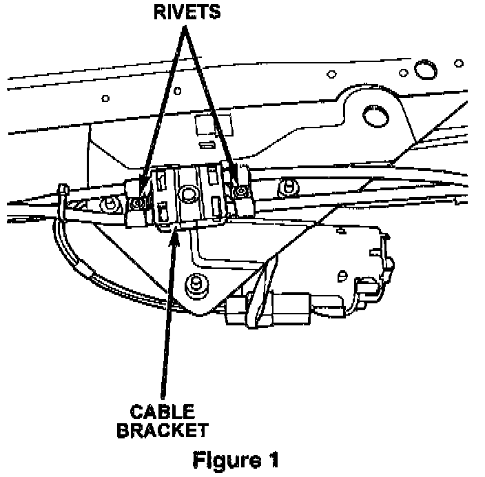
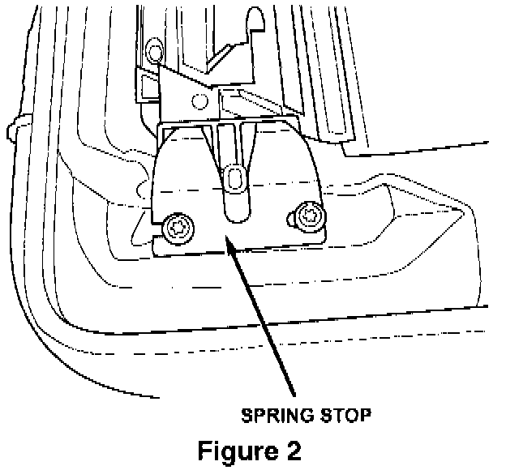

Repair Procedure
This bulletin involves replacing the sun roof cable tubes.CAUTION:
THE HEAD LINER IS A ONE PIECE, MOLDED COMPONENT WITH LIMITED FLEXIBILITY. USE CAUTION NOT TO BEND IT EXCESSIVELY OR DAMAGE MAY RESULT.
1. Remove the A, B and C pillar trim moldings
2. Remove the upper liftgate trim molding.
3. Remove the right side D pillar trim molding and upper portion of the left side molding.
4. Remove the sound bar if equipped.
5. Remove the sun visors and disconnect the vanity lamp wiring if equipped.
6. Remove the assist handles.
7. Remove the push plugs from the roof support.
8. Remove the dome/reading lamp or overhead console.
9. Remove the sun roof welt from the opening.
10. With aid of an assistant, carefully remove the head liner from the vehicle. Use care not to damage it.
11. Disconnect the four drain tubes from the corners of the drainage tray.
12. Remove the overhead console bracket screws and let the bracket rest on the console.
13. Mark the location of the sun roof relative to the roof with a grease pencil to ease installation and eliminate the need for later adjustment.
14. Disconnect the wire harness. With the aid of an assistant, remove the sun roof attaching screws and remove the sun roof as an assembly. Place the assembly on a clean protected work bench.

15. Using a 1/8 inch drill, drill out the rivets from the bracket that holds the drive tubes in place on the motor and remove the bracket. See Figure 1. Clean all shavings out of the area.
16. Disconnect the drive cables from the motor gear.

17. Remove the two screws that hold the spring stop and cable guide tube bracket from the under side of the tray. See Figure 2.
18. Remove the tie straps holding the tube and harness together.
19. Remove the guide tube by pulling the tube out of the housing and pulling the cable out of the tube.
20. Slide the new tube over the cable and position it in the assembly.
21. Install the guide tube bracket and spring stop using the screws removed previously. Tighten the screws to 3 Nm (27 in. Lbs.).
22. Install the tie straps.
23. Repeat the procedure for the other cable guide bracket.
24. Position the sun roof glass in the full open position.
25. Insert the drive cables into the motor drive gear.
26. Position the tube bracket over the gear and attach the bracket using the rivets provided in the kit.
27. Install the sun roof assembly into position. Make the necessary electrical connections and cycle the unit to assure correct operation.
28. Connect the drain tubes to the tray.
29. Install the head liner and related components by reversing the removal procedure. Use care not to damage the head liner. Use care not to trap or pinch any wires when installing the sun visor or overhead console/dome lamp.